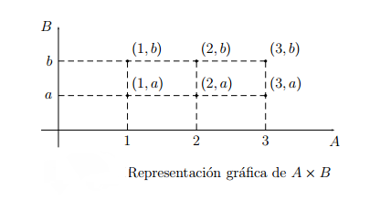
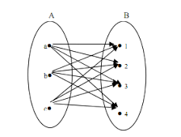
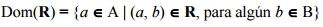
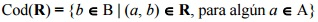

Plano Cartesiano:
Definición .-
Se llama producto cartesiano de dos conjuntos A y B y se representa A x B, al conjunto de
pares ordenados (a, b), tales que el primer elemento pertenece al primer conjunto y el segundo
elemento al segundo conjunto. Es decir:
A × B = {(a, b) ; a ∈ A ∧ b ∈ B}
El producto cartesiano, en general, no es conmutativo. Es decir:
A x B ≠ B x A.
Puede ocurrir que los conjuntos A y B sean coincidentes.:
Ejemplo 2.4.1:
El producto cartesiano A × B de los conjuntos
A = {1, 2, 3} y
B = {a, b} es el conjunto:
A × B = {(1, a),(1, b),(2, a),(2, b),(3, a),(3, b)}

Cuando sea posible, es útil representar gráficamente el producto cartesiano
por medio de diagramas de coordenadas cartesianas. Para ello se toman
dos rectas OX y OY , perpendiculares u oblicuas, de forma que el punto O
es la intersección de ambas.Este punto recibe el nombre de origen, la recta
OX es el eje de abscisas y la OY es el eje de ordenadas.
El conjunto A se
representa linealmente en OX, y el B en OY. Los elementos (a,b) de A×B se
representan por puntos resultantes de la intersección de la paralela a OY por
a con la paralela a OX por b.
En la figura anterior se muestra la representación
en coordenadas cartesianas del ejemplo anterior.
Dos pares ordenados (a, b) y (c, d), elementos del producto cartesiano
A×B, son iguales si a = c y b = d. Es claro que, en general, A×B 6= B×A.
Se puede extender la definición de producto cartesiano a n conjuntos.
Definición .-
Dados n conjuntos A1, A2, . . . , An se define su producto cartesiano
como:
A1 × A2 × · · · × An = {(a1, a2, . . . , an) ;
ai ∈ Ai
, ∀ i = 1, 2, . . . , n}
Finalmente, si A y B son conjuntos finitos, tambien lo es A×B y se tiene
que:
|A × B| = |A|.|B|
Relación Binaria:
Definición .-
Una relación binaria, o simplemente relación, R de un conjunto A en un conjunto B es un subconjunto del producto cartesiano
AxB. Si (a,b) ∀ se escribe aRb y significa que a esta en relación con b.
Si A=B se dice que R es una relación binaria sobre A.

Esta relación se puede denotar de diversas formas:
1.- Como pares ordenados (a, b).
2.- Indicando que aRb.
3.- Como una mezcla entra los dos anteriores R(a,b).
Al conjunto de todos los elementos relacionados mediante la relación R en un conjunto lo denotamos como R(M)
Ejemplo 2.4.2:
1.- A={0, 1, 2, 3}, B={0, 1, 2, 3, 4, 5},
RA,B={<0,1>, <0,2>, <0,3>, <0,4>, <0,5>, <1,2>, <1,3>, <1,4>, <1,5>, <2,3>, <2,4>, <2,5>, <3,4>, <3,5>}.
2.- A={0,1,2,3},
RA2=A2={<0, 0>, <0, 1>, <0, 2>, <0, 3>, <1, 0>, <1, 1>, <1, 2>, <1, 3>, <2, 0>, <2, 1>, <2, 2>, <2, 3>, <3, 0>, <3, 1>, <3, 2>, <3, 3>}.
3.- A={0,1,2,3},
RA2=A2={<0, 0>, <1, 1>, <2, 2>, <3, 3>}.
4.- Sea C los siguientes cuerpos del Sistema Solar Interior:
C={Sol, Mercurio, Venus, Tierra, Luna, Marte, Fobos, Deimos}, se define la relación x gira alrededor de y como G={, , , , , , }.
• Dominio:
Si R ⊆(AxB) es una relación de A en B,
el dominio de R, que se escribe Dom(R), y es el conjunto de los elementos de A que están relacionados, es decir:

• Rango:
Si R⊆(AxB) es una relación de A en B, el codominio(rango, imagen o recorrido) de R, se escribe
Cod(R) o Ran(R) y es el conjunto de los elementos de B, que están relacionados con algún elemento de A, es decir:

Material Extra: